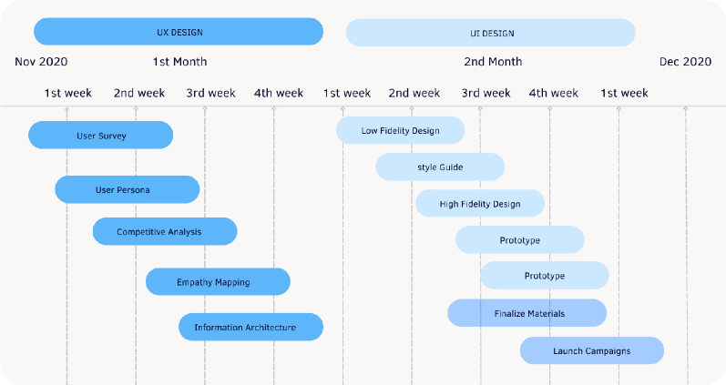
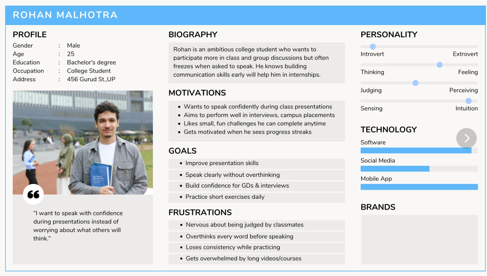
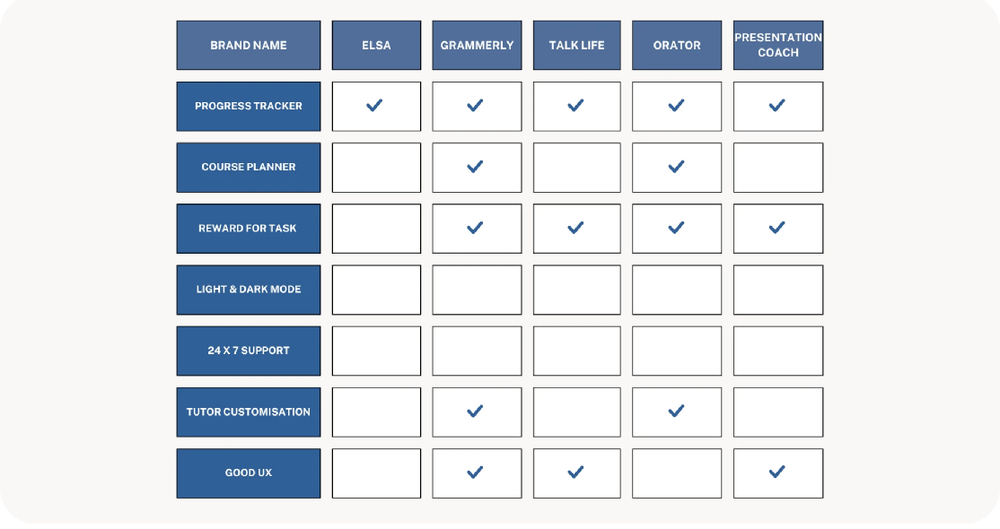
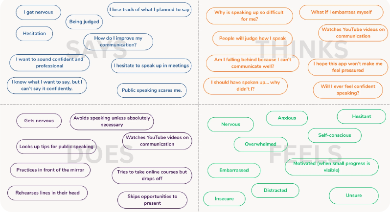
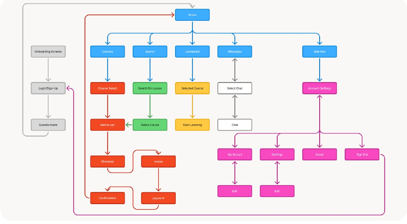
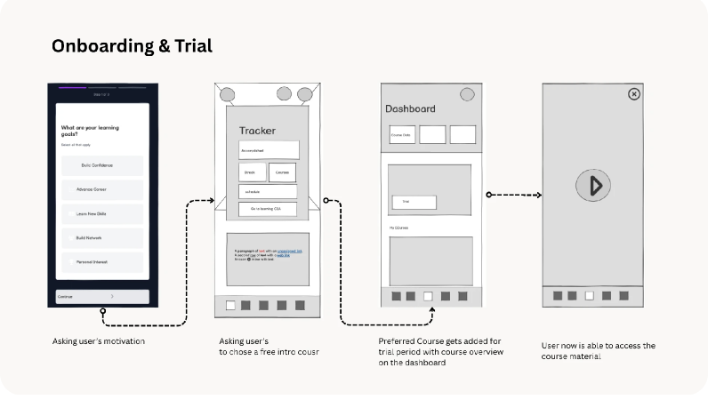
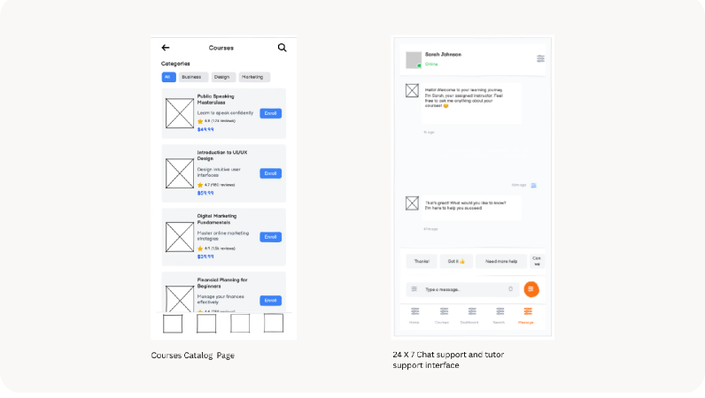
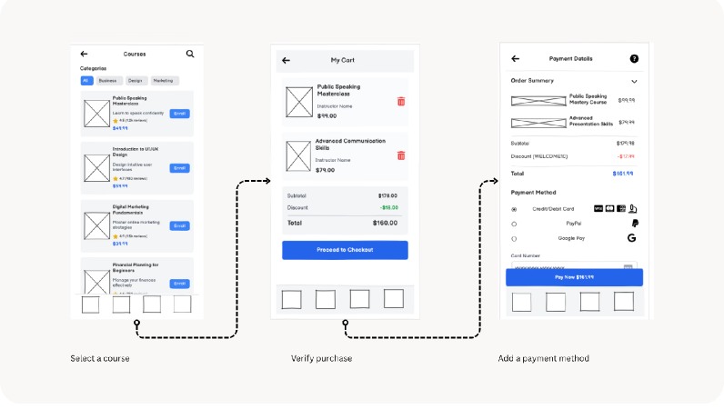
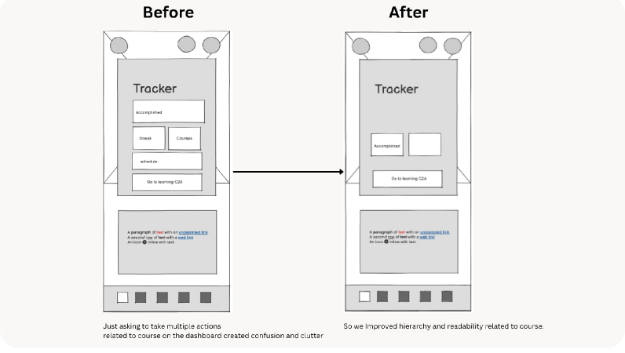
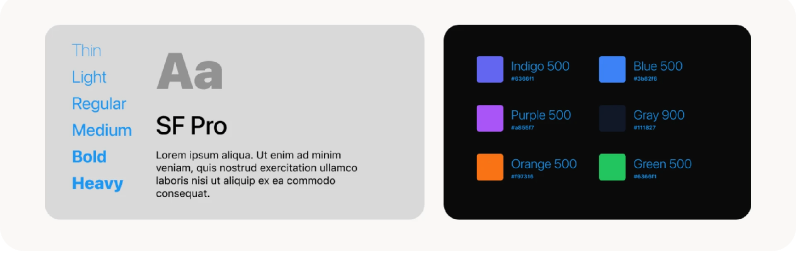

In a world where communication happens faster than our thoughts, finding the confidence to express ourselves has quietly become one of the biggest modern challenges. TheConfidento exists to change that.
RoleUX Researcher · UI Designer · Design System Architect
IndustryEducational Technology
Timeline6 weeks
TheConfidento — Communication Learning Platform
Overview
Starting with a thank you
I appreciate you taking the time to review this case study. I chose this example because it demonstrates my ability to create creative and elegant solutions to technical problems, my ability to design beyond the typical screen, and my ability to effectively collaborate with both internal and external partners.
The goal was to create a centralized system where users could learn, practice, track progress, and build confidence through small, repeatable actions. Instead of overwhelming learners with long modules, TheConfidento focuses on bite-sized progression, progress visibility, and autonomous exploration.
54%Increase in user satisfaction
44%Increase in average time spent
35%Improvement in user rating
Project Roadmap
Two tracks across six weeks
The project was structured across two parallel tracks — UX Design and UI Design — with research, synthesis, and visual execution happening in sequence. Discovery ran through the first month; visual design and prototyping carried the second.

UX & UI Design phases — week by week
Problem Statement
People have valuable ideas — but struggle to voice them
Many people struggle to express themselves confidently despite having valuable thoughts and ideas. TheConfidento seeks to solve this by helping users build public speaking abilities and social confidence through structured learning, practice tracking, and motivation tools.
Existing tools often focus on "courses" but not motivation systems. They lack a clear learning structure, overwhelm users with long modules, and fail to communicate safety, privacy, or trust.
Focus on courses — but not motivation systems
Lack a clear, structured learning path
Overwhelm users with long, rigid modules
Fail to communicate safety, privacy, or trust
Lack personalized, self-paced journeys
Opportunity
A seamless, modular, progress-driven communication learning app that feels safe, enjoyable, and achievable.
User Survey
71 respondents revealed how people really feel about speaking up
To understand how people actually feel about speaking up, I ran a survey across students and working professionals. The goal: learn how confident they feel speaking in front of others, how often they avoid it, whether they're actively trying to improve, and what motivates them to keep practicing.
50%Are college-going students
58.8%Hold back from speaking even when they have something to say
73%Want to invest at least 1 hour to improve their communication skills
Three user categories — one primary persona to guide design
After analysing the survey, we divided target users into 3 primary categories: Working Professionals, College Students, and School-going Students. For each category, we had conversations with multiple individuals and collectively built user personas.

Primary persona — Rohan Malhotra, College Student
Competitive Analysis
No competitor combined progress, motivation, and good UX
We audited ELSA, Grammerly, Talk Life, Orator, and Presentation Coach across 7 key feature dimensions. The gap was clear: no single tool combined a progress tracker, reward system, dark mode, 24/7 support, tutor customization, and genuinely good UX.

Feature comparison — 5 competitors × 7 dimensions
Empathy Mapping
Anxious, hopeful — and not sure where to start
To move forward in the ideation phase, I created an empathy map of what our user says, thinks, does, and feels. This gave us a solid foundation and helped shape the solution to the problems they face.
Says: "I want to improve — but I don't know where to start."
Thinks: "What if I sound bad? What if I'm judged?"
Does: Browses courses but hesitates to commit
Feels: Anxious, shy, unconfident — but genuinely hopeful

Information Architecture
Six core buckets — one coherent product flow
The entire experience was mapped into 6 core areas: Home (Progress + Recommendations), Courses (Structure, Lessons, AI feedback roadmap), Trackers (Daily learning + consistency streaks), Practice (Playback, prompts, reflection — future phase), Search & Explore, and Profile / Settings.

Full product information architecture
Navigation Model
Step-by-Step for new users. Hub-and-Spoke for returning ones.
The survey data made one thing very clear: people are motivated — but easily distracted, with scattered productivity peaks and difficulty maintaining habits. This directly shaped the navigation strategy for TheConfidento.
Two navigation models — one for each user state
Step-by-Step · New Users
Reduces cognitive load in the first session
Introduces only the essentials: profile, goals, starting course
Builds trust before asking for deeper commitments
Ensures users don't feel lost in a complex ecosystem on day one
Hub-and-Spoke · Returning Users
Home screen shows progress, streaks, and recommended next actions
Each spoke leads to a focused area: Courses, Practice, Tracker, Profile
Users resume where they left off — no replaying onboarding
Supports short windows of focus and varying times of day
Step-by-Step lowered the barrier to entry. Hub-and-Spoke sustained engagement over time.
Whiteboarding & Sketches
Collaborative ideation from whiteboard to paper
Early explorations happened simultaneously on Zoom whiteboards and paper. These sessions evolved the direction from a linear onboarding model into the hub-and-spoke structure, and surfaced early ideas for card layouts, progress meters, streak motivators, and trust-building banners.
Paper sketches — card layouts, modular lessons, streak motivators
Low-Fidelity Wireframes
Structure before aesthetics — giving the app its skeleton
Once ideation was complete, we moved into low-fidelity wireframes to give the application its initial structure. These were used for early testing and feedback before any visual design was applied.

Onboarding & Trial — user flow wireframes

Courses catalog + 24×7 chat support interface

Course selection & checkout payment flow
User Feedback & Rectifications
Testing revealed a hierarchy problem — and we fixed it
After completing low-fidelity wireframes, we organised feedback sessions with multiple users and noted the problems they faced navigating the prototype. We curated all feedback and rectified the issues that would reduce pain points and improve flow.

Before → After: Tracker screen — improved hierarchy and readability
User Feedback
Design Rectification
"The learning dashboard feels a bit overwhelming for new users, especially those who struggle with confidence. With so many options visible at once, users weren't always sure where to start or what to do next."
Redesigned the dashboard into a more structured, modular layout — giving users a clear next step through progress indicators and simplified task cards. Hierarchy was improved to guide attention naturally toward the most important action.
Style Guide
Vibrant, warm, and designed to reduce anxiety
The aesthetics of TheConfidento were designed to make users feel supported and motivated as they build confidence. A vibrant gradient of purples, blues, and pinks creates an uplifting, modern atmosphere that reduces anxiety and encourages exploration. A clean, rounded sans-serif adds warmth and readability across light and dark modes.
Together, these visual choices create a friendly, inspiring environment that helps users feel safe and empowered throughout their learning journey.

SF Pro typography · color system — Indigo 500, Blue 500, Purple 500, Orange 500, Green 500
High Fidelity
Bringing it to life — color, motion, and real personality
After completing all previous steps, it was time to give life to the wireframes by adding color, typography, and components using Material You guidelines. The result: a product that feels safe, enjoyable, and genuinely motivating to use.
Onboarding
Dashboard
Course Detail
My Dashboard
Search
Dark Mode
Personalised Dashboard: Daily progress, learning goals, and course recommendations with cheerful illustrations and a modular layout.
Learning Plan & Course Detail: Courses broken into short, trackable segments with mentor info, pricing, lesson structure, and purchase options — scannable and clear.
Search (500+ Courses): Users can choose from 500+ courses by preference, search via tags or name, and filter by trending or recent.
User Dashboard: Segmented by completed lessons — colour-coded tiles indicate course themes and progress.
24×7 Chat Support: Three options — Assigned Tutor, AI Response, or User Helpline — so users always have somewhere to turn.
Dark Mode: Contrast ratios >4.5:1, soft desaturated backgrounds, brand highlight colors (blues, purples) retained across both modes for full consistency.
Designing for Safety & Trust
Confidence thrives in an environment of trust
As I designed TheConfidento, I wanted every interaction to feel as safe as the conversations it inspires. Beyond aesthetics, I focused on creating an experience that made users feel secure, respected, and in control — especially around sensitive data like voice recordings, personal goals, and payment information.
01
Real-World References
Incorporated Stripe, Google Pay, and Apple Pay to simulate credible financial flows — creating immediate familiarity and reducing friction at the most sensitive touchpoint.
02
Reassuring Microcopy
"Secure checkout powered by Stripe" and "Your progress is safely stored" — small but powerful lines that subtly communicate security without ever breaking the flow.
03
Transparent Feedback Loops
Progress indicators, stable confirmation states, and timestamped uploads helped users feel grounded in a process that was transparent and reliable.
04
Ethical by Design
Designing for safety is not just a functional layer — it's the invisible foundation that allows confidence to grow. Every screen reflected a mindset of trust, empathy, and ethical responsibility.
Design System
A reusable UI kit built for scale and consistency
The design system was built from scratch in Figma with auto-layout. Every component was designed to be extended, reskinned, or reused across new screens without breaking consistency — giving the product a foundation to grow on.
Typography: Rounded, accessible sans-serif (SF Pro) for a friendly, warm tone
Colors: Youthful and optimistic palette with high contrast across both modes
Components: Reusable UI kit built in Figma with full auto-layout
Next steps for the product:
Usability testing with first batch of learners via Maze
Explore AI-powered speech feedback for future phases
Community-based peer review in upcoming versions
App icon — on device
Onboarding — live on device
What I Learned
Four things this project taught me
01
0→1 demands opinionated design
Without an existing product to react to, every decision required first-principles thinking. The temptation to add features was constant — the discipline was in knowing what to leave out.
02
Behavioral ≠ interface design
An app meant to change behavior requires designing habit loops and emotional momentum, not just usable screens. Streak systems and micro-celebrations were as important as core features.
03
Navigation is a product decision
The choice between step-by-step and hub-and-spoke wasn't aesthetic — it was a product strategy grounded in real research about how and when our users actually learn.
04
Trust is invisible until it's missing
Designing for safety — microcopy, confirmation states, transparent feedback — is the invisible foundation that allows confidence to grow. Remove it, and users feel it immediately.
This was a quick glimpse of what I did while leading design for this project. Reach out to know more about scaling the feature, design system, use cases, and testing insights.